Bệnh Tim Bẩm Sinh
I. Đại cương
– Bệnh tim bẩm sinh (congenital heart disease) là bất thường cấu trúc của tim hoặc mạch máu lớn, hình thành trong thời kỳ phôi thai và hiện diện khi trẻ được sinh ra.
– Dịch tễ: Bệnh tim bẩm sinh là nhóm dị tật bẩm sinh phổ biến nhất:
+ Phân tích gộp 260 nghiên cứu ghi nhận tỷ lệ khoảng 9,4/1.000 trẻ sinh sống trong giai đoạn 2010–2017.
+ Thông liên thất (TLT) là tổn thương đơn lẻ thường gặp nhất; chiếm 35,6% số trường hợp bệnh tim bẩm sinh trong phân tích gộp giai đoạn 1970–2017.
+ Một số ước tính quốc gia nêu khoảng 400 trẻ sơ sinh mắc bệnh mỗi năm tại Singapore và 16.440 trẻ mỗi năm tại Việt Nam.
– Căn nguyên: Phần lớn trường hợp không quy được cho một nguyên nhân đơn lẻ; nguy cơ thường liên quan đến sự phối hợp của yếu tố di truyền và môi trường:
+ Bất thường nhiễm sắc thể hoặc gen, hội chứng di truyền và tiền sử gia đình mắc bệnh tim bẩm sinh làm tăng nguy cơ.
+ Đái tháo đường trước mang thai ở mẹ, một số nhiễm trùng trong thai kỳ như rubella và phơi nhiễm với một số thuốc hoặc chất gây quái thai có thể liên quan.
– Cơ chế bệnh sinh: Sai lệch trong quá trình hình thành vách tim, van tim, đường ra hoặc mạch máu lớn tạo nên các khiếm khuyết cấu trúc, gây luồng thông, tắc nghẽn hoặc kết nối mạch máu bất thường:
+ Hậu quả huyết động phụ thuộc loại và kích thước tổn thương, chênh áp giữa các buồng tim và sức cản mạch phổi; có thể gây quá tải thể tích hoặc áp lực, tái cấu trúc mạch phổi, tăng áp phổi và đảo chiều luồng thông.
+ Trên hình ảnh, bất thường cấu trúc giúp xác định vị trí tổn thương; kích thước buồng tim, động mạch phổi và mức tưới máu phổi phản ánh hậu quả huyết động.
– Biểu hiện lâm sàng: Phổ biểu hiện thay đổi theo loại tổn thương và mức độ rối loạn huyết động:
+ Tổn thương nhẹ có thể không gây triệu chứng hoặc chỉ phát hiện tiếng thổi khi khám.
+ Tổn thương nặng có thể gây tím, khó thở, bú kém, chậm tăng trưởng hoặc suy tim.
– Phân bố: Tổn thương có thể đơn độc hoặc phối hợp, liên quan đến vách tim, van tim, đường ra hoặc mạch máu lớn; biểu hiện sinh lý có thể không tím hoặc tím tùy hướng luồng thông và mức độ cản trở dòng máu.
– Vai trò CĐHA: CĐHA giúp phát hiện, xác định giải phẫu tổn thương và đánh giá hậu quả huyết động:
+ Siêu âm tim thường là phương tiện đầu tay để khảo sát cấu trúc trong tim và huyết động; X-quang ngực đánh giá gián tiếp kích thước tim và tuần hoàn phổi nhưng không xác định đầy đủ loại dị tật.
+ CT và MRI bổ sung đánh giá giải phẫu phức tạp, mạch máu lớn và các cấu trúc ngoài tim; MRI còn hỗ trợ định lượng dòng máu và thể tích buồng tim khi cần.
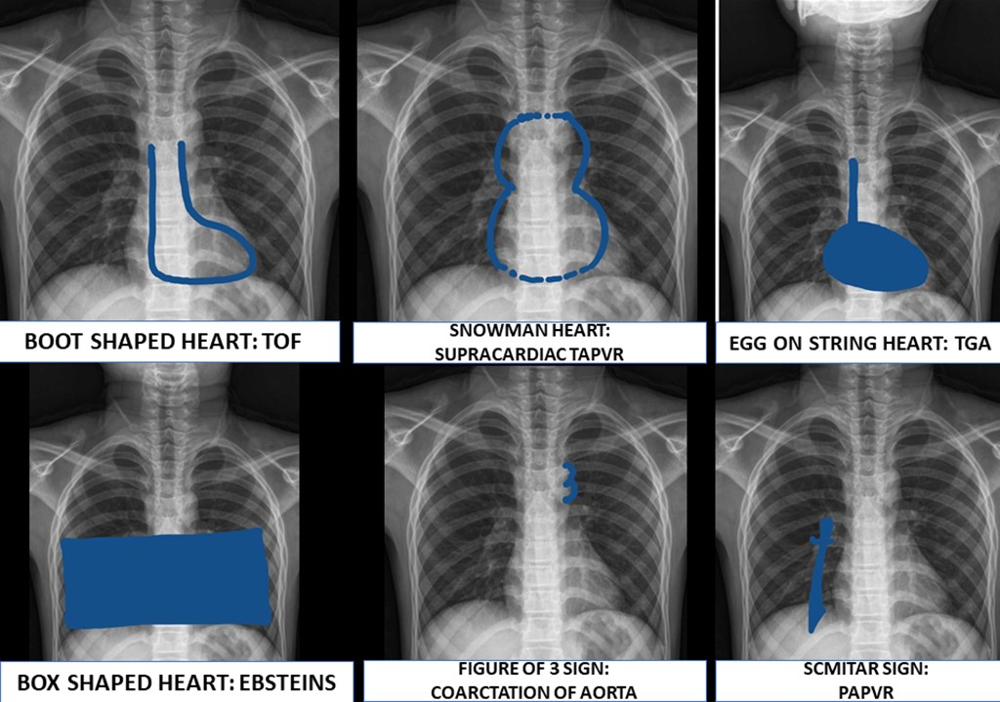
© Chẩn Đoán Hình Ảnh Xray.vn
* Phân loại
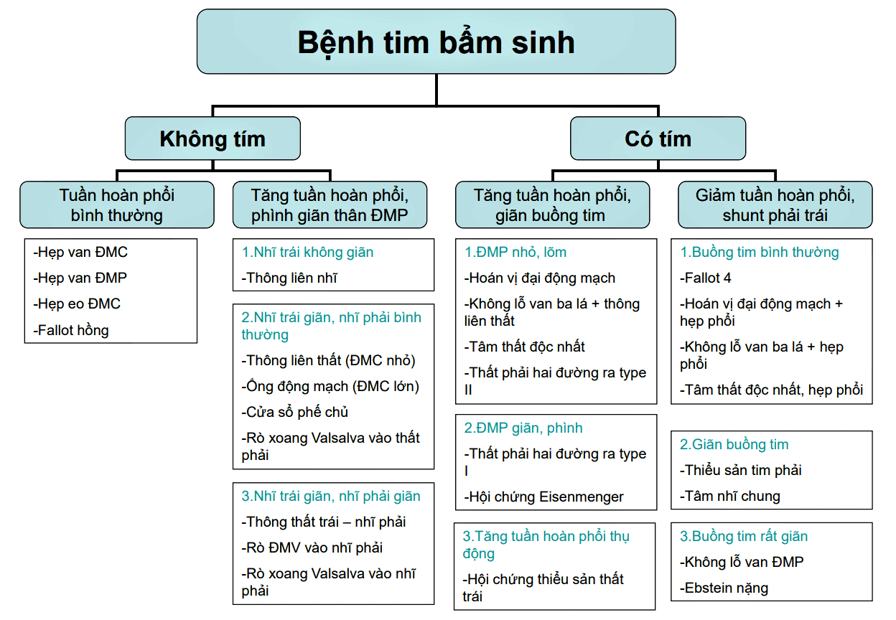
II. Giải phẫu
1. Giải phẫu x-quang
– Tư thế chụp thẳng sau trước (PA): Trên phim chỉ thấy bờ ngoài bóng tim, không phân biệt trực tiếp từng buồng tim:
+ Tâm nhĩ trái (Left atrium) nằm chủ yếu ở phía sau, nhận máu từ các tĩnh mạch phổi đi vào gần như theo phương ngang.
+ Tiểu nhĩ trái đôi khi tạo đoạn lồi nhỏ ngay dưới thân động mạch phổi, rõ hơn trên phim nghiêng.
+ Giãn nhĩ trái có thể làm lồi bờ tim trên-phải và mở rộng góc carina do hai phế quản chính tách xa nhau.
+ Tâm nhĩ phải (Right atrium) nhận máu từ tĩnh mạch chủ trên và tĩnh mạch chủ dưới, tạo phần lớn bờ tim phải.
+ Giãn nhĩ phải làm bờ tim phải lồi và dịch ra ngoài.
+ Tâm thất trái (Left ventricle) nằm lệch trái, ở phía sau tâm thất phải, tạo phần dưới bờ tim trái và mỏm tim.
+ Giãn thất trái làm bờ tim trái lồi, mỏm tim thường lệch xuống dưới và sang trái.
+ Tâm thất phải (Right ventricle) nằm trước nhất, ngay sau xương ức; trên phim PA thường chồng hình lên bóng tim, không tạo bờ ngoài rõ.
+ Giãn thất phải có thể đẩy bóng tim sang trái; chỉ khi giãn nặng, thất phải mới có thể góp phần tạo bờ tim trái.

– Tư thế chụp nghiêng:
+ Tâm nhĩ trái (Left atrium) tạo phần trên của bờ sau tim.
+ Giãn nhĩ trái làm lồi phần trên của bờ sau tim.
+ Tâm thất trái (Left ventricle) tạo phần dưới của bờ sau tim.
+ Giãn thất trái làm lồi phần dưới của bờ sau tim và đẩy bờ sau tim ra sau.
+ Tâm thất phải (Right ventricle) nằm ngay sau xương ức; phần thấp của khoảng sáng sau xương ức được giới hạn bởi mặt trước thất phải.
+ Giãn thất phải làm mất dần khoảng sáng sau xương ức, thường từ dưới lên khi thất phải lớn dần.

* Tư thế thẳng


* Tư thế nghiêng


2. Giải phẫu CLVT


III. Chẩn đoán hình ảnh
1. Thông liên thất
– Thông liên thất (ventricular septal defect, VSD) là khiếm khuyết của vách liên thất tạo thông thương giữa thất trái và thất phải; tổn thương có thể đơn độc hoặc phối hợp với các dị tật tim khác.
– Giải phẫu: Vách liên thất gồm phần màng và phần cơ; phần cơ được phân chia theo vùng buồng nhận, bè và đường ra:
+ Bó His đi sát vùng phần màng và bờ sau-dưới của một số lỗ thông quanh màng; tổn thương hệ dẫn truyền tại đây có thể gây block nhĩ thất.
+ Vách liên thất bình thường ngăn cách hai buồng thất; hệ dẫn truyền nhĩ-thất chạy sát vách, không nằm trong vách như một “phần đầu” riêng biệt.
– Dịch tễ: Nghiên cứu tại Bệnh viện Nhi Đồng I và II, TP. HCM, giai đoạn 1985–1994 ghi nhận:
+ Trong 5.442 trẻ mắc bệnh tim, 54% có bệnh tim bẩm sinh.
+ Báo cáo nêu tỷ lệ thông liên thất, tứ chứng Fallot và thông liên nhĩ lần lượt là 40%, 16% và 13%.
– Nguyên nhân: Phần lớn TLT không quy được cho một nguyên nhân đơn lẻ; nguy cơ thường liên quan đến sự phối hợp của yếu tố di truyền và môi trường:
+ Tiền sử bệnh tim bẩm sinh ở cha mẹ hoặc anh chị em làm tăng nguy cơ mắc bệnh tim bẩm sinh trong gia đình; điều này không đồng nghĩa mọi trường hợp đều di truyền theo một cơ chế đơn gen.
+ Hội chứng Down làm tăng nguy cơ dị tật tim; có thể gặp TLT, dù kênh nhĩ thất là tổn thương điển hình thường gặp hơn.
+ Phơi nhiễm rượu ở cha hoặc mẹ được báo cáo có liên quan với bệnh tim bẩm sinh nói chung, nhưng chưa xác lập mối liên quan đặc hiệu với TLT.
+ Mối liên quan giữa thuốc hoặc chất gây nghiện của cha mẹ với nguy cơ TLT chưa rõ; cần xác định chất và thời điểm phơi nhiễm, không xem việc sử dụng bất kỳ chất nào là nguyên nhân đã được xác lập.
– Sinh lý bệnh: Phân loại lỗ thông nhỏ, vừa hoặc lớn cần xét mức độ hạn chế luồng thông và hậu quả huyết động; đường kính lỗ thông đơn độc không đủ để phân tầng:
+ TLT nhỏ, hạn chế (bệnh Roger) gây luồng thông trái-phải ít; áp lực động mạch phổi thường bình thường hoặc chỉ tăng nhẹ, không gây quá tải đáng kể các buồng tim.
+ TLT vừa vẫn hạn chế một phần luồng thông; lượng máu lên phổi và hồi lưu tĩnh mạch phổi tăng, gây tăng gánh thể tích nhĩ trái và thất trái, đôi khi kèm tăng áp phổi nhẹ đến vừa.
+ TLT lớn, không hạn chế, khi không kèm tắc nghẽn đường ra thất phải nặng, làm áp lực hai thất gần cân bằng và tạo luồng thông trái-phải lớn; tăng tuần hoàn phổi, tăng gánh thể tích nhĩ trái và thất trái, đồng thời tăng gánh áp lực thất phải.
+ Luồng thông lớn kéo dài có thể gây tái cấu trúc mạch phổi và tăng sức cản mạch phổi không hồi phục; khi sức cản mạch phổi vượt sức cản hệ thống, luồng thông có thể trở nên hai chiều hoặc đảo chiều phải-trái, gây tím và hội chứng Eisenmenger.
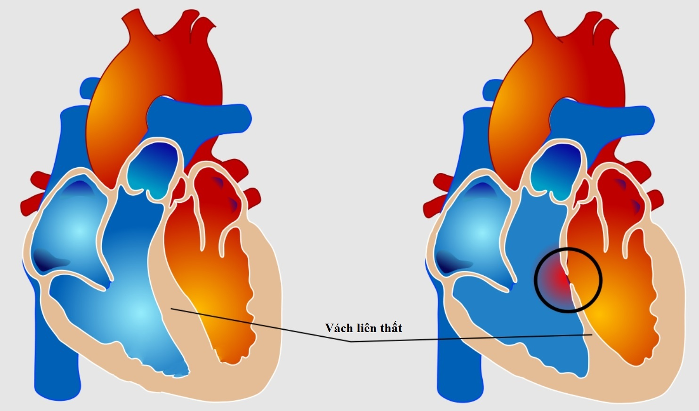
– Phân loại: Dựa vào vị trí giải phẫu:
+ TLT quanh màng chiếm khoảng 70–80%; thường nằm sát van ba lá và có thể lan vào mô cơ xung quanh.
+ TLT cơ bè chiếm khoảng 5–20%; có thể xuất hiện ở nhiều vị trí trong phần cơ và có thể có nhiều lỗ thông.
+ TLT đường ra dưới van động mạch phổi (phần thoát) chiếm khoảng 5–7% tại Hoa Kỳ nhưng có thể chiếm khoảng 30% ở một số quần thể Đông Á; có thể kèm sa lá van động mạch chủ và hở van động mạch chủ.
+ TLT buồng nhận chiếm khoảng 5–8%; nằm sát vòng van ba lá, phía sau phần màng của vách liên thất.
* Chẩn đoán X-quang
– Đặc điểm hình ảnh: Mức độ bất thường phụ thuộc lượng luồng thông, áp lực mạch phổi và giai đoạn bệnh:
+ TLT nhỏ, hạn chế thường không làm thay đổi bóng tim hoặc tuần hoàn phổi trên X-quang.
+ Khi luồng thông trái-phải còn ưu thế và có ý nghĩa, thường thấy tim to do giãn nhĩ trái, thất trái; cung động mạch phổi nổi và mạch máu phổi tăng đậm. Lỗ thông lớn hoặc tăng áp phổi có thể kèm lớn thất phải.
+ Cung động mạch chủ thường bình thường, đôi khi nhỏ tương đối; dấu hiệu này không đặc hiệu và không đủ để kết luận giảm cung lượng tim.
+ X-quang không thấy trực tiếp lỗ thông và không định lượng đáng tin cậy kích thước hay mức độ luồng thông; cần siêu âm tim để đánh giá giải phẫu và huyết động.
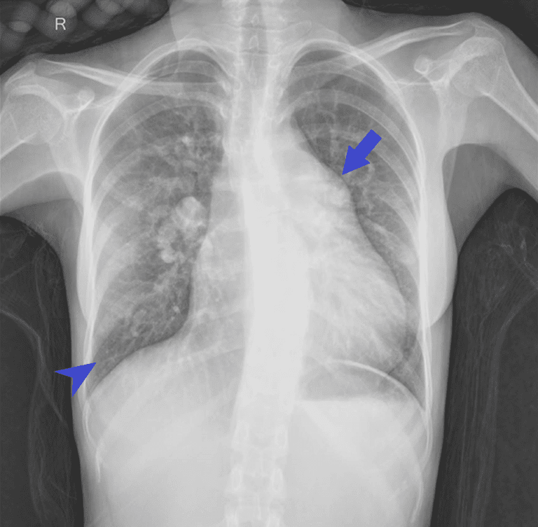
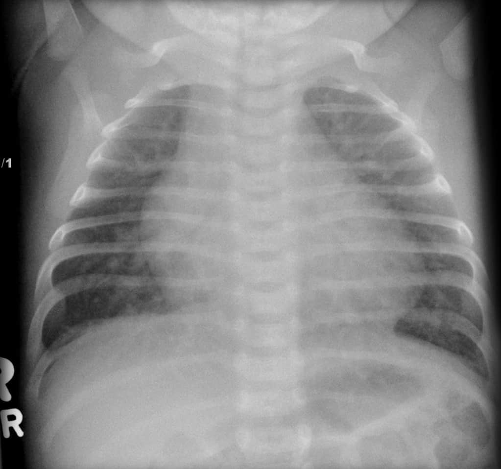
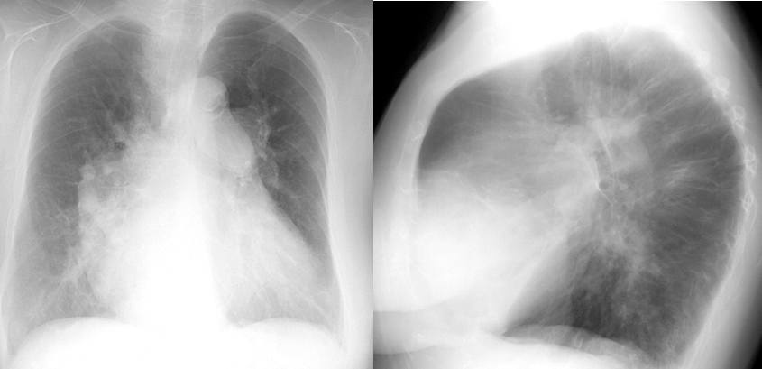
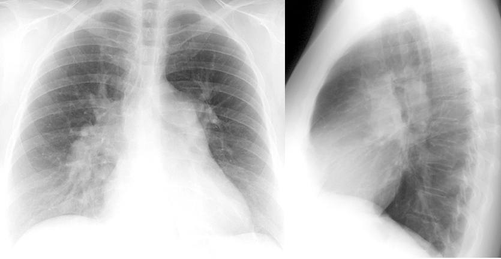
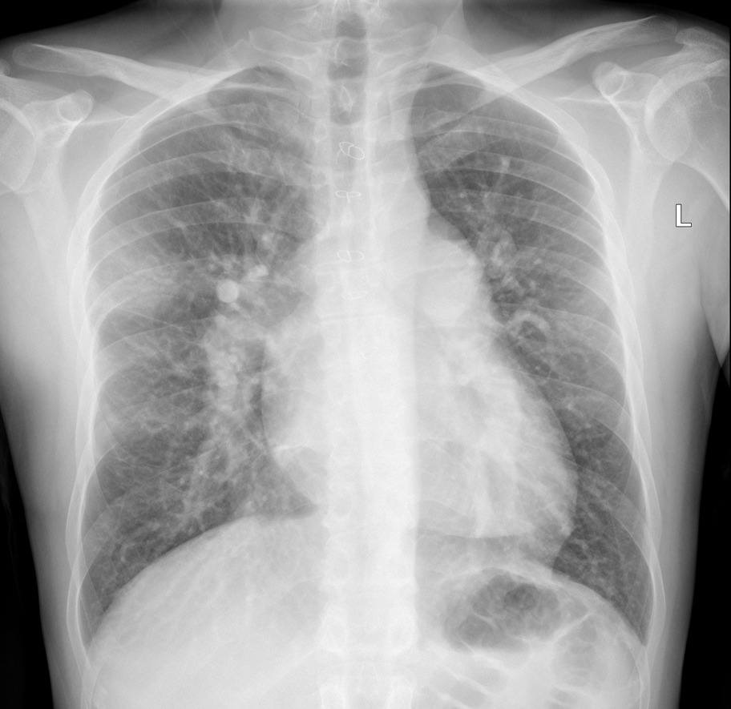
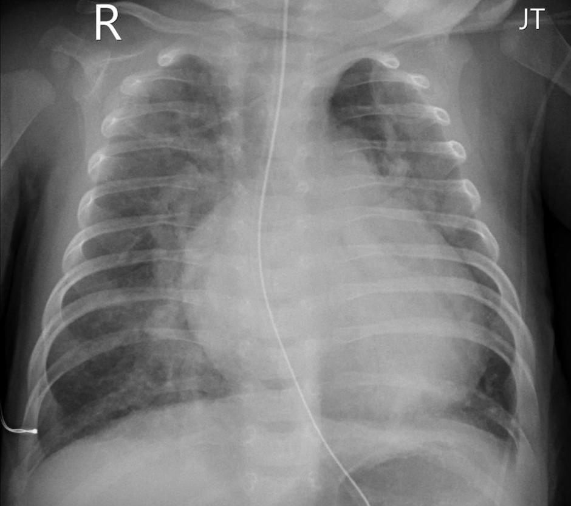
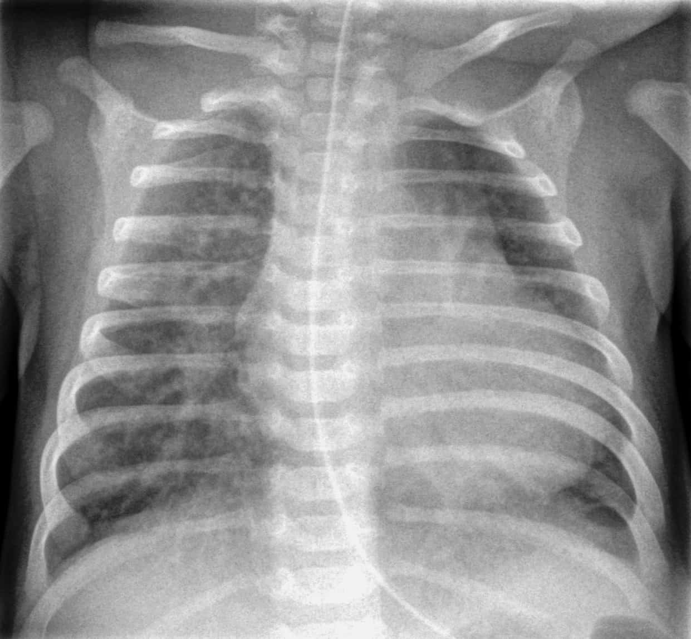
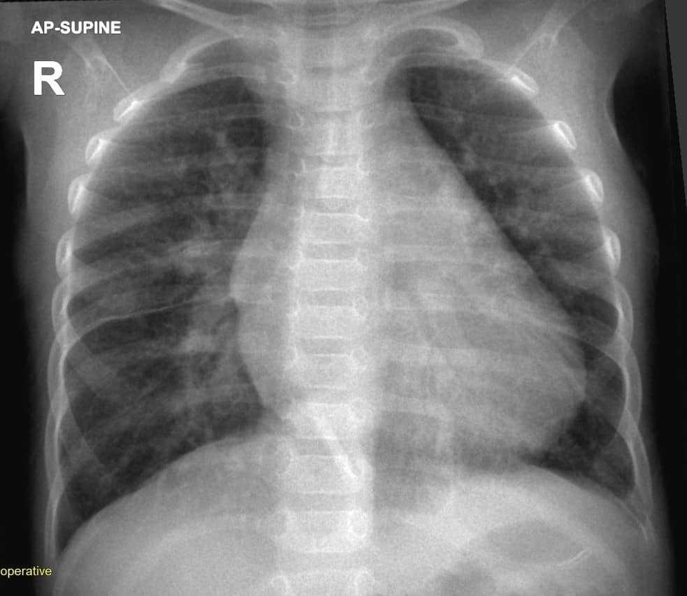
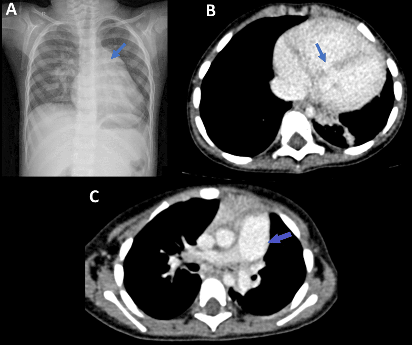
– Hội chứng Eisenmenger: Luồng thông trái-phải lớn kéo dài có thể gây bệnh mạch máu phổi và tăng áp phổi nặng, không hồi phục; sức cản mạch phổi tăng dần làm luồng thông trở nên hai chiều hoặc đảo chiều phải-trái, gây giảm oxy máu và tím:
+ Bóng tim có thể to, thường nổi bật tim phải; khi luồng thông giảm ở giai đoạn muộn, bóng tim đôi khi nhỏ hơn so với giai đoạn tăng tuần hoàn phổi nhưng không nhất thiết trở về bình thường.
+ Thất phải lớn có thể làm mỏm tim hếch lên trên vòm hoành; đây không phải dấu hiệu đặc hiệu.
+ Thân động mạch phổi và các nhánh trung tâm giãn, làm rốn phổi nổi bật.
+ Mạch máu phổi ngoại vi thưa, nhỏ hoặc cắt cụt, tạo tương phản với các động mạch phổi trung tâm giãn và làm phế trường ngoại vi sáng hơn.
+ X-quang gợi ý hậu quả của tăng áp phổi nhưng không xác định được hướng luồng thông hay sức cản mạch phổi; cần phối hợp siêu âm tim và, khi phù hợp, thông tim để đánh giá huyết động.
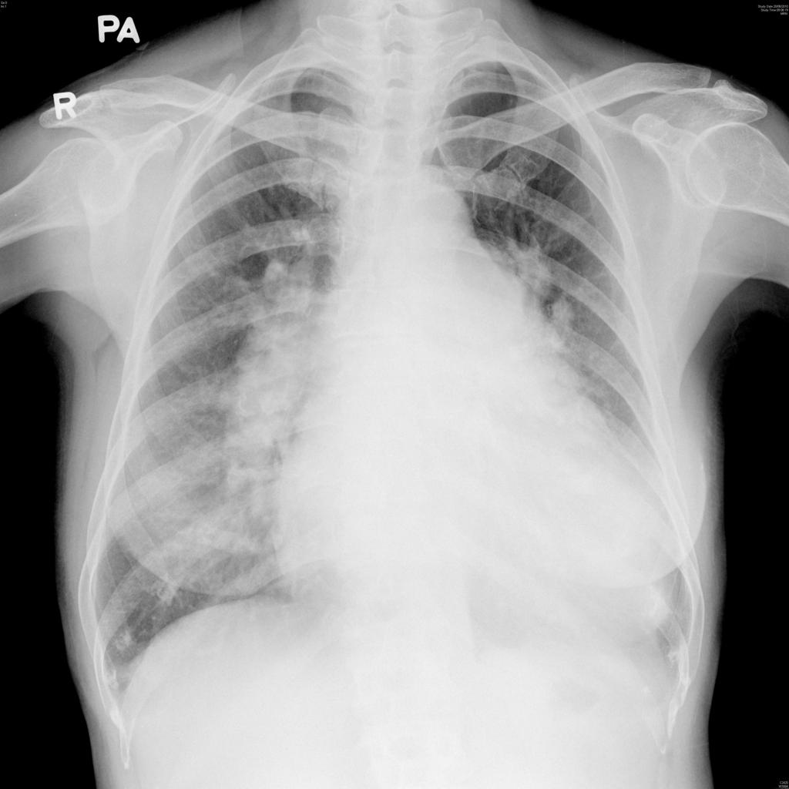
* Cắt lớp vi tính:
– Vai trò: CT tim là phương tiện bổ sung, không phải lựa chọn đầu tay để chẩn đoán TLT; cân nhắc khi siêu âm tim chưa xác định rõ giải phẫu hoặc cần khảo sát tổn thương phối hợp và mạch máu lớn:
+ CT hữu ích khi cần lập bản đồ giải phẫu trước can thiệp, nhất là khi siêu âm tim hoặc MRI bị hạn chế.
+ Ở trẻ em, chỉ định cần cân nhắc lợi ích chẩn đoán với phơi nhiễm bức xạ.
– Đặc điểm hình ảnh: Dấu hiệu trực tiếp là gián đoạn mô vách tạo đường thông giữa hai thất; đôi khi thấy thuốc cản quang đi qua lỗ thông, tùy thời điểm chụp và mức độ tương phản giữa các buồng tim:
+ Mô tả vị trí, số lượng, hình dạng, đường đi và kích thước lỗ thông trên các mặt phẳng phù hợp; lỗ thông có thể có hình dạng khác nhau ở hai mặt vách.
+ Khảo sát tổn thương phối hợp, gồm bất thường đường ra, mạch máu lớn và mối liên quan với các van tim; đánh giá chức năng van cần phối hợp siêu âm tim.
– Cạm bẫy: CT đánh giá giải phẫu tốt hơn huyết động:
+ TLT nhỏ có thể bị bỏ sót trên CT không đồng bộ điện tâm đồ hoặc ảnh nhiễu do chuyển động; không thấy lỗ thông trên các ảnh này không loại trừ TLT.
+ Hướng và mức độ luồng thông thường cần đánh giá bằng Doppler siêu âm tim; CT có thể ước tính Qp/Qs với quy trình đồng bộ điện tâm đồ hồi cứu chuyên biệt, nhưng không phải cách đánh giá thường quy.
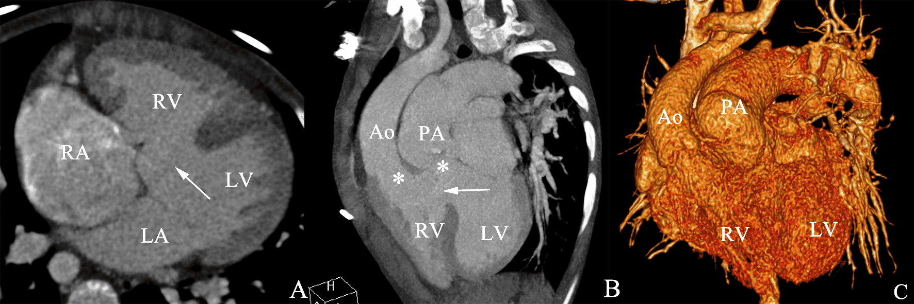
2. Thông liên nhĩ
– Thông liên nhĩ (atrial septal defect, ASD) là khiếm khuyết thật sự của vách liên nhĩ, tạo thông thương giữa hai buồng nhĩ; sau sinh luồng thông thường hướng từ nhĩ trái sang nhĩ phải do áp lực nhĩ trái cao hơn.
– Cơ chế bệnh sinh: Trong bào thai, lỗ bầu dục cho phép máu đi từ nhĩ phải sang nhĩ trái, giúp máu tránh phổi chưa hoạt động; vách nguyên phát đóng vai trò như một van:
+ Sau sinh, sức cản mạch phổi giảm, máu trở về nhĩ trái tăng và áp lực nhĩ trái vượt áp lực nhĩ phải, làm vách nguyên phát áp vào vách thứ phát và đóng chức năng lỗ bầu dục.
+ Sự đóng chức năng xảy ra sau sinh, nhưng hai vách có thể không dính hoàn toàn về giải phẫu.
– Phân biệt: Tồn tại lỗ bầu dục (patent foramen ovale, PFO) không phải là một dạng thông liên nhĩ:
+ PFO là khe dạng van còn lại do hai vách không dính hoàn toàn, không phải khuyết mô vách; gặp ở khoảng một phần tư người trưởng thành. Khi áp lực nhĩ phải tăng thoáng qua, chẳng hạn lúc ho hoặc nghiệm pháp Valsalva, có thể xuất hiện luồng thông phải-trái tạm thời.
+ Thông liên nhĩ là khuyết mô vách thực sự, thường gây luồng thông trái-phải kéo dài và tăng gánh thể tích nhĩ phải, thất phải. Giảm oxy máu động mạch không phải biểu hiện điển hình nếu chưa có tăng áp phổi nặng và đảo chiều luồng thông.
– Dịch tễ: Phân tích gộp 260 nghiên cứu ghi nhận:
+ Thông liên nhĩ chiếm 15,4% số trường hợp bệnh tim bẩm sinh được phân loại trong giai đoạn 1970–2017, đứng thứ hai sau thông liên thất.
+ Bệnh gặp ở nữ nhiều hơn nam.
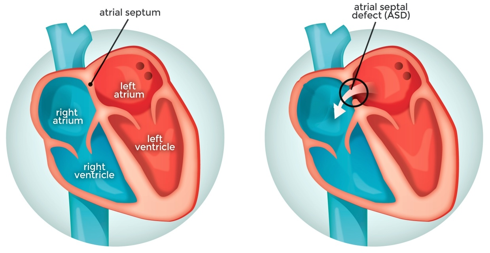
– Phân loại: Dựa vào vị trí giải phẫu
+ Thông liên nhĩ lỗ tiên phát (ASD-op) nằm ở phần trước-dưới của vách liên nhĩ, sát van nhĩ-thất; thuộc phổ khiếm khuyết vách nhĩ-thất và thường kèm bất thường van nhĩ-thất, không nên xem đơn thuần là lỗ thông đơn độc thông thường.
+ Thông liên nhĩ lỗ thứ phát (ASD-os) là thể thường gặp nhất, chiếm khoảng 70% các trường hợp; nằm tại vùng hố bầu dục và có thể xuất hiện đơn độc. Kích thước có thể khoảng 10–30 mm, nhưng không dùng khoảng này làm tiêu chí xác định thể bệnh.
+ Thông liên nhĩ xoang tĩnh mạch (ASD-sv) nằm phía sau vách liên nhĩ, sát chỗ đổ của tĩnh mạch chủ trên hoặc tĩnh mạch chủ dưới vào nhĩ phải; thể sát tĩnh mạch chủ trên thường phối hợp với hồi lưu tĩnh mạch phổi bất thường.
+ Thông liên nhĩ xoang vành (ASD-cs) do khuyết một phần hoặc toàn bộ trần xoang vành, tạo thông thương giữa xoang vành và nhĩ trái; thể này hiếm gặp và có thể phối hợp với tĩnh mạch chủ trên trái đổ vào xoang vành.
* Chẩn đoán X-quang
– Hình ảnh phản ánh mức độ luồng thông và hậu quả lên buồng tim, tuần hoàn phổi:
+ Bóng tim có thể bình thường khi luồng thông nhỏ; một số số liệu nêu tỷ lệ này khoảng 15%.
+ Khi luồng thông trái-phải có ý nghĩa, thường thấy giãn nhĩ phải và thất phải, bóng tim to, cung động mạch phổi nổi và mạch máu phổi tăng đậm; mỏm tim có thể chếch lên. Nhĩ trái và thất trái thường không to.
+ Cung động mạch chủ thường bình thường, đôi khi nhỏ tương đối; dấu hiệu này không đặc hiệu.
+ Khi bệnh mạch máu phổi tiến triển, động mạch phổi trung tâm có thể giãn trong khi mạch máu phổi ngoại vi thưa, nhỏ hoặc cắt cụt, làm phế trường ngoại vi sáng hơn.
– Cạm bẫy: Bóng tim to và tăng đậm mạch phổi gợi ý luồng thông có ý nghĩa nhưng không xác định riêng TLN hoặc chứng minh hướng luồng thông; cần siêu âm tim Doppler để xác nhận.
=> Case lâm sàng 1:
* Chẩn đoán CT:
– CT tim có tiêm thuốc cản quang là phương tiện bổ sung khi siêu âm tim chưa đánh giá đủ giải phẫu hoặc cần khảo sát các cấu trúc phối hợp; không phải phương tiện đầu tay.
– Dấu hiệu trực tiếp: Có thể thấy gián đoạn mô vách liên nhĩ tạo thông thương giữa hai nhĩ:
+ Tái tạo đa mặt phẳng theo vách giúp xác định vị trí, hình dạng, kích thước và bờ lỗ thông.
+ Khảo sát mối liên quan với tĩnh mạch chủ, tĩnh mạch phổi và xoang vành; đặc biệt tìm hồi lưu tĩnh mạch phổi bất thường ở thể xoang tĩnh mạch và tĩnh mạch chủ trên trái ở thể xoang vành.
– Đánh giá luồng thông: Nếu quan sát được thuốc cản quang đi từ nhĩ trái sang nhĩ phải ở pha chụp phù hợp, dấu hiệu này gợi ý luồng thông trái-phải; không nên suy ra hướng hoặc mức độ luồng thông chỉ từ phân bố thuốc trên một pha chụp.
– Cạm bẫy: Lỗ thông nhỏ có thể bị bỏ sót do chuyển động tim hoặc hiệu ứng thể tích bán phần; CT không thấy lỗ thông không loại trừ thông liên nhĩ. Siêu âm Doppler phù hợp hơn để đánh giá hướng luồng thông, còn MRI thường được ưu tiên khi cần định lượng Qp/Qs.
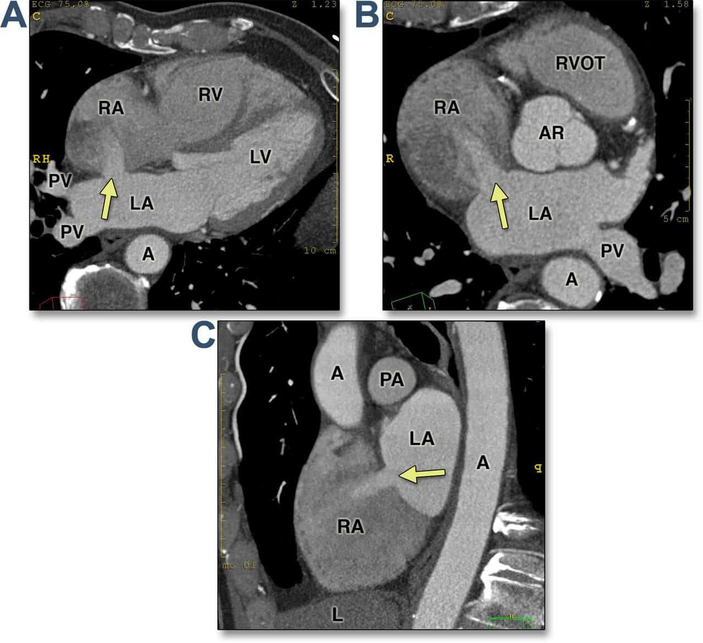
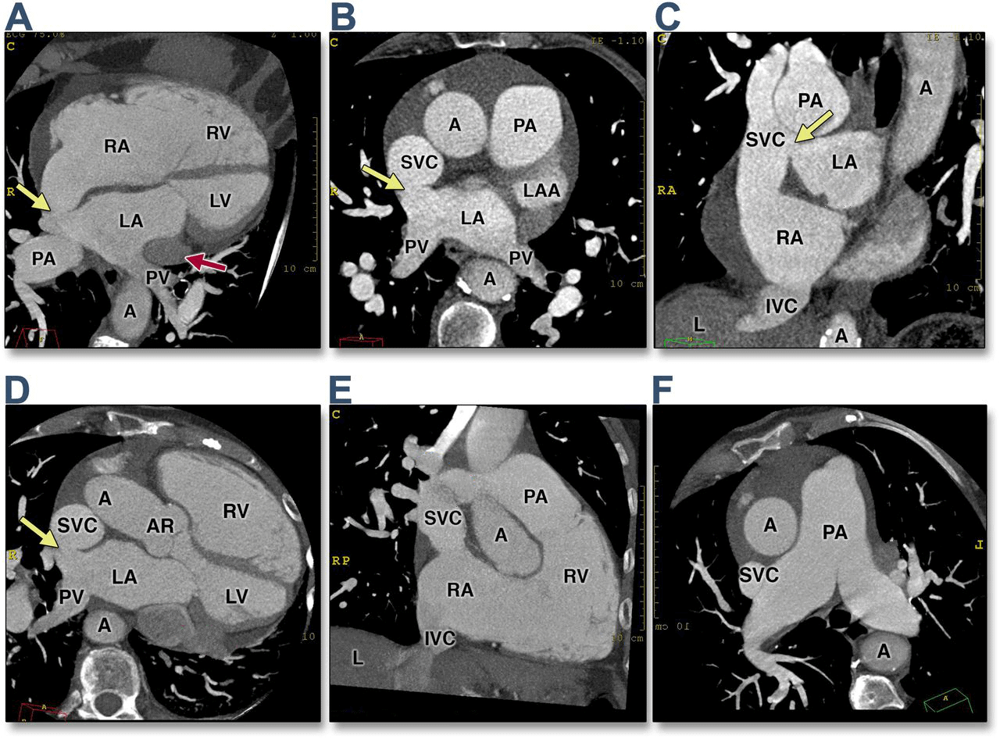
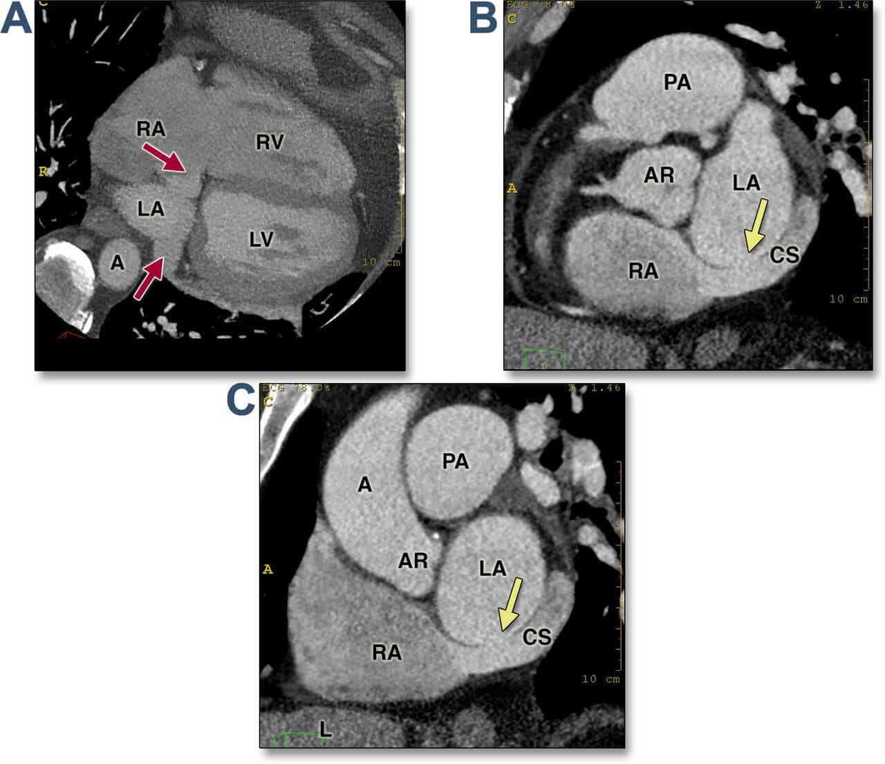
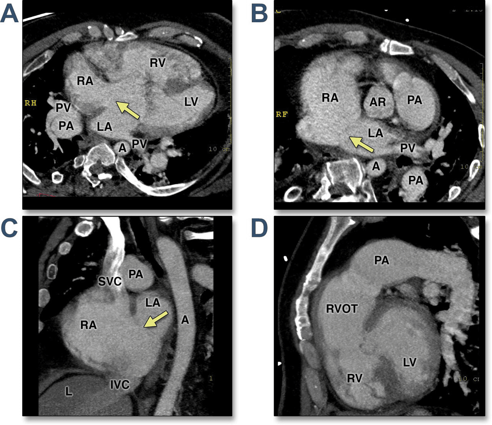
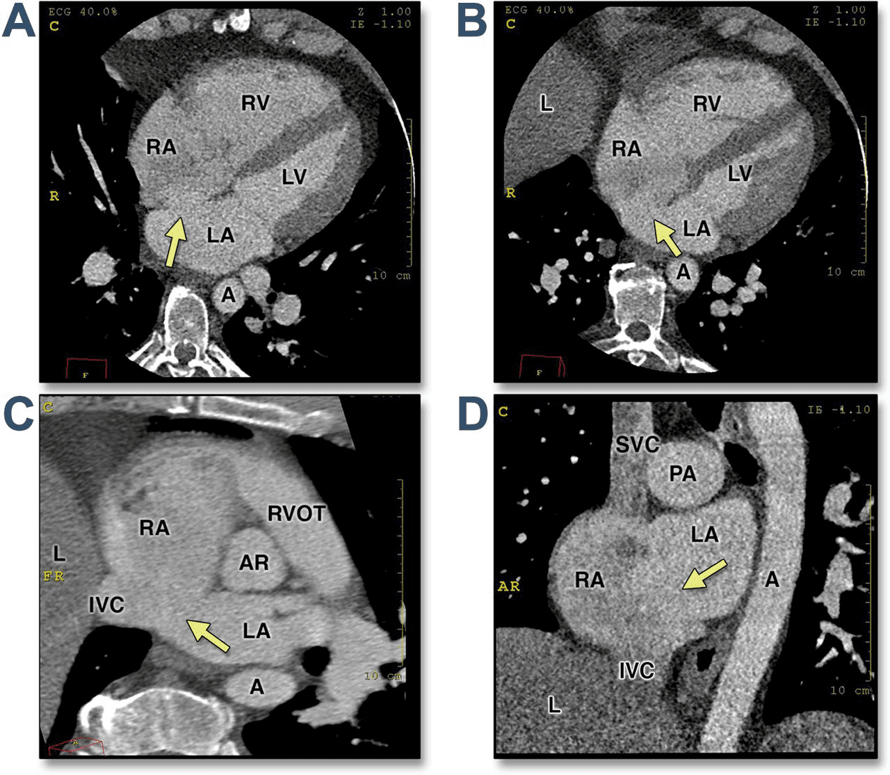
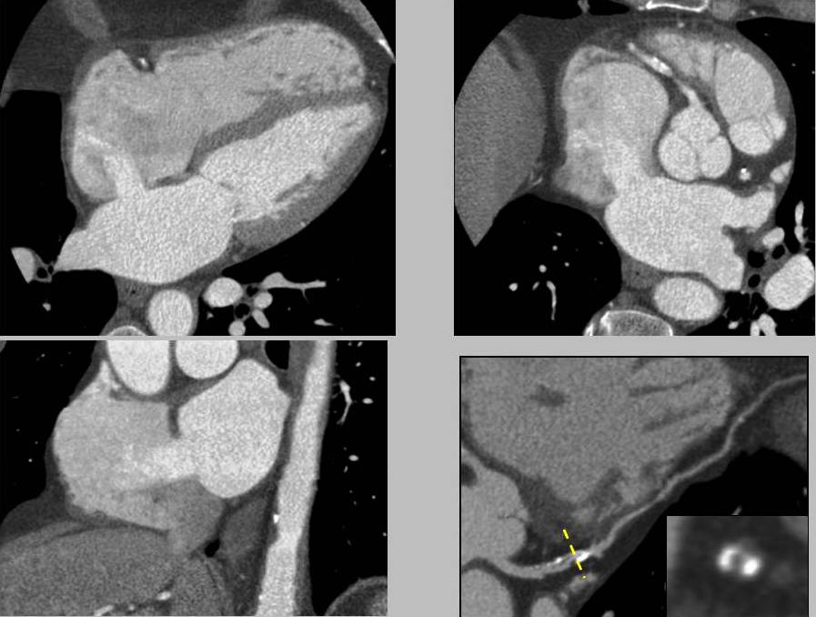
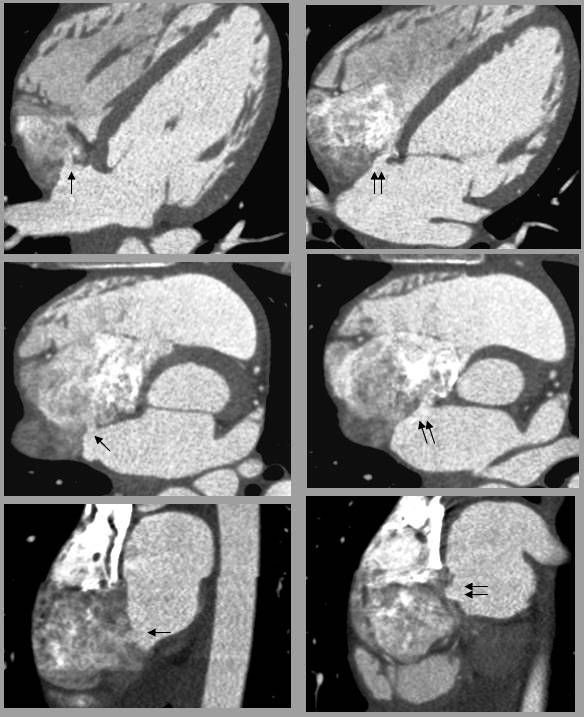
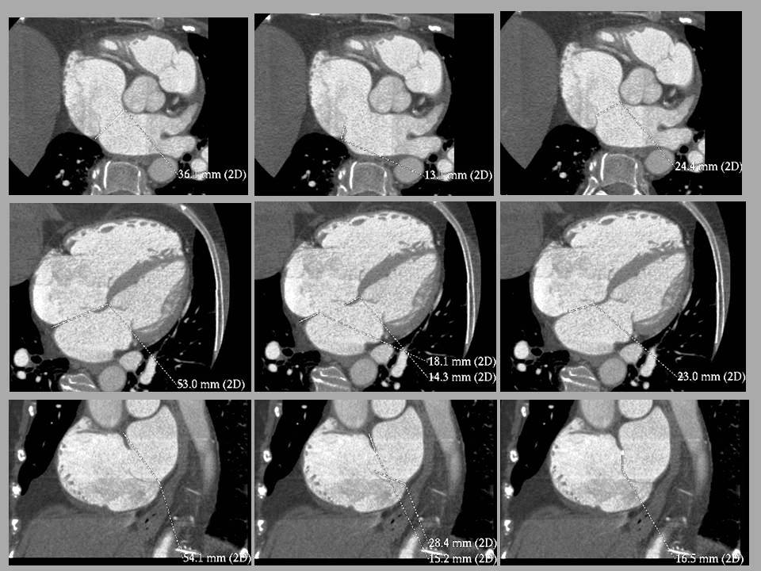
* Hội chứng Eisenmenger
– Cơ chế bệnh sinh: Ở thông liên nhĩ lớn chưa được sửa chữa, luồng thông trái-phải kéo dài làm tăng lưu lượng máu lên phổi, gây tái cấu trúc mạch phổi và tăng sức cản mạch phổi tiến triển:
+ Khi sức cản mạch phổi tăng cao, luồng thông có thể trở nên hai chiều rồi đảo chiều phải-trái; máu ít oxy đi vào tuần hoàn hệ thống, gây giảm oxy máu và tím.
– Đặc điểm CT: Nếu thấy thuốc cản quang đi qua khuyết vách từ nhĩ phải sang nhĩ trái ở pha chụp phù hợp, dấu hiệu này gợi ý luồng thông phải-trái.
3. Còn ống động mạch
– Còn ống động mạch (patent ductus arteriosus, PDA) là tình trạng ống động mạch của bào thai vẫn thông sau sinh.
– Giải phẫu: Ống động mạch nối động mạch phổi trái gần chỗ xuất phát với động mạch chủ xuống, ngay sau chỗ xuất phát của động mạch dưới đòn trái; trong bào thai, máu đi từ động mạch phổi qua ống này vào động mạch chủ.
– Dịch tễ: Còn ống động mạch thuộc nhóm dị tật tim bẩm sinh thường gặp:
+ Phân tích gộp 260 nghiên cứu giai đoạn 1970–2017 ghi nhận tổn thương này chiếm khoảng 10,2% số trường hợp bệnh tim bẩm sinh được phân loại.
+ Bệnh thường gặp ở nữ hơn nam; một số số liệu ghi nhận tỷ lệ nam:nữ khoảng 1:3.
– Sinh lý bệnh: Mức độ luồng thông phụ thuộc kích thước ống động mạch, chênh áp giữa động mạch chủ và động mạch phổi, sức cản mạch phổi và tình trạng tim-phổi:
+ Sau sinh, khi sức cản mạch phổi giảm, áp lực động mạch chủ cao hơn động mạch phổi nên máu thường đi liên tục từ động mạch chủ qua ống động mạch sang động mạch phổi.
+ Luồng thông trái-phải làm tăng lưu lượng máu lên phổi và hồi lưu về nhĩ trái, thất trái, gây quá tải thể tích; shunt lớn có thể làm tăng áp lực tĩnh mạch phổi, gây sung huyết phổi và suy giảm chức năng hô hấp, đặc biệt ở trẻ sinh non.
+ Trong thì tâm trương, máu từ động mạch chủ tiếp tục chảy qua ống động mạch vào động mạch phổi, làm giảm áp lực tâm trương động mạch chủ và có thể gây hiệu áp rộng.
+ Ống động mạch nhỏ, không có ý nghĩa huyết động thường không gây hậu quả đáng kể; viêm nội tâm mạc nhiễm trùng có thể xảy ra nhưng nguy cơ rất thấp.
+ Ống động mạch lớn, có luồng thông đáng kể có thể gây triệu chứng hô hấp, suy tim và tăng áp động mạch phổi; thời điểm và mức độ biểu hiện thay đổi theo lượng shunt, tuổi thai và tình trạng tim-phổi.
+ Luồng thông lớn kéo dài có thể dẫn đến bệnh mạch máu phổi và sức cản mạch phổi tăng không hồi phục; luồng thông khi đó có thể trở nên hai chiều hoặc đảo chiều phải-trái, gây hội chứng Eisenmenger.
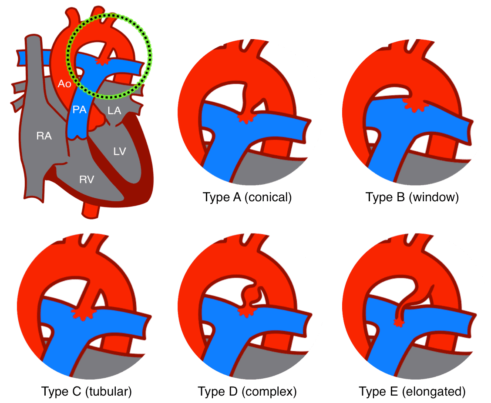
* Hình ảnh X-quang
– Dấu hiệu phụ thuộc mức độ luồng thông và tình trạng mạch phổi:
+ Ống động mạch nhỏ, không có ý nghĩa huyết động thường không làm thay đổi hình ảnh X-quang.
+ Khi luồng thông trái-phải có ý nghĩa, thường thấy bóng tim to do giãn nhĩ trái và thất trái, tăng đậm mạch máu phổi và cung động mạch phổi nổi; động mạch chủ lên có thể nổi bật.
+ Khi bệnh mạch máu phổi tiến triển, động mạch phổi trung tâm có thể giãn trong khi các nhánh ngoại vi thưa, nhỏ hoặc cắt cụt; bóng tim có thể không to hoặc giảm kích thước khi luồng thông giảm.
– Cạm bẫy: X-quang không thấy trực tiếp ống động mạch và không xác định đáng tin cậy đường kính hoặc mức độ luồng thông; cần siêu âm tim để đánh giá giải phẫu và huyết động.
* Chẩn đoán CT
– CT mạch máu có tiêm thuốc cản quang là phương tiện bổ sung khi cần xác định giải phẫu ống động mạch, khảo sát tổn thương phối hợp hoặc lập bản đồ trước can thiệp; siêu âm tim vẫn là phương tiện đầu tay.
– Dấu hiệu trực tiếp: Ống động mạch hiện thành cấu trúc có lòng ngấm thuốc, nối động mạch chủ xuống ngay sau chỗ xuất phát động mạch dưới đòn trái với động mạch phổi trái gần chỗ xuất phát:
+ Trên mặt cắt ngang, nên tìm ống ở vị trí gần hướng 12 giờ so với động mạch chủ xuống; tái tạo mặt phẳng đứng dọc, đứng ngang hoặc cong giúp theo dõi liên tục đường đi và tránh bỏ sót.
+ Có thể đồng bộ điện tâm đồ khi cần đánh giá chi tiết ống nhỏ hoặc phức tạp; CT không đồng bộ vẫn có thể phát hiện ống lớn.
– Đánh giá hình thái: Mô tả chiều dài, đường kính nhỏ nhất, đường kính ở hai đầu và cấu hình ống để hỗ trợ lập kế hoạch đóng:
+ Hình thái có thể dạng phễu với đầu động mạch chủ rộng hơn đầu động mạch phổi, dạng cửa sổ ngắn-rộng, dạng ống, phức tạp hoặc kéo dài.
+ Khảo sát phình ống, huyết khối, vôi hóa và mối liên quan với quai động mạch chủ, động mạch chủ xuống và động mạch phổi.
– Phân biệt: Cửa sổ chủ-phổi nối động mạch chủ lên với thân động mạch phổi; vị trí xuất phát này khác với ống động mạch nối động mạch chủ xuống, ngay sau động mạch dưới đòn trái, với động mạch phổi trái gần gốc.
– Cạm bẫy: Ống nhỏ có thể bị bỏ sót trên CT ngực thường quy do kích thước và vị trí; cần xem các mặt phẳng tái tạo thay vì chỉ dựa vào mặt cắt ngang. Ở người lớn, dây chằng động mạch vôi hóa có thể giả dạng lồi thành mạch; cần xác nhận lòng ống ngấm thuốc và thông thương liên tục với hai mạch.
– Giới hạn: CT mô tả giải phẫu tốt nhưng CT mạch máu thường quy không định lượng đáng tin cậy luồng thông; dùng Doppler siêu âm tim hoặc MRI khi cần đánh giá huyết động. Cân nhắc bức xạ và thuốc cản quang chứa iod, nhất là ở trẻ em.
=> Case lâm sàng 1:
=> Case lâm sàng 2:
=> Case lâm sàng 3:
=> Case lâm sàng 4:
=> Case lâm sàng 5:
4. Tứ chứng Fallot
– Tứ chứng Fallot (Tetralogy of Fallot; TOF) là dị tật tim bẩm sinh tím thường gặp nhất, chiếm khoảng 7–10% các dị tật tim bẩm sinh.
– Gồm bốn tổn thương chính:
+ Thông liên thất lớn, thường không hạn chế và kiểu lệch hàng (malalignment).
+ Động mạch chủ cưỡi ngựa trên vách liên thất, nhận máu từ cả hai thất.
+ Tắc nghẽn đường thoát thất phải: có thể ở vùng dưới van (phễu), tại van hoặc trên van/nhánh động mạch phổi; thể nặng có thể tiến tới teo động mạch phổi. Thể vắng van động mạch phổi là biến thể hiếm.
+ Phì đại thất phải, thứ phát do tắc nghẽn đường thoát thất phải.
– Dị tật phối hợp cần lưu ý:
+ Quai động mạch chủ phải (khoảng 25%) và bất thường động mạch vành (khoảng 5–10%); đặc biệt lưu ý động mạch vành bất thường chạy qua đường thoát thất phải.
+ Có thể gặp hẹp nhánh động mạch phổi, động mạch bàng hệ chủ-phổi lớn hoặc còn ống động mạch; còn ống động mạch có thể là nguồn cấp máu phổi quan trọng ở thể teo động mạch phổi.
– Biểu hiện lâm sàng thay đổi chủ yếu theo mức độ tắc nghẽn đường thoát thất phải; thông liên thất trong tứ chứng Fallot thường rộng, không hạn chế. Tắc nghẽn rất nặng hoặc teo động mạch phổi có thể gây tím ngay sau sinh; tắc nghẽn nhẹ hơn có thể chưa gây tím lúc nghỉ, với biểu hiện xuất hiện muộn hơn trong giai đoạn nhũ nhi hoặc trẻ nhỏ. Mức độ tắc nghẽn có thể tăng ở một số trẻ, nhưng bệnh không nhất thiết tiến triển nặng dần ở mọi trường hợp.
– Sinh lý bệnh:
+ Tắc nghẽn đường thoát thất phải làm tăng hậu tải và gây phì đại thất phải. Vì thông liên thất thường rộng, không hạn chế, mức độ tắc nghẽn đường thoát thất phải cùng tương quan sức cản phổi-hệ thống chi phối hướng luồng thông; tắc nghẽn nặng làm tăng luồng thông phải-trái qua thông liên thất, giảm lưu lượng máu phổi và gây tím.
+ Cơn tím kịch phát có thể khởi phát khi trẻ khóc hoặc gắng sức; tăng tắc nghẽn đường thoát thất phải, tăng sức cản mạch phổi hoặc giảm sức cản hệ thống có thể làm tăng luồng thông phải-trái và giảm độ bão hòa oxy.
+ Phì đại thất phải là đáp ứng với quá tải áp lực; không nên xem xơ hóa rồi suy tim phải là diễn tiến tất yếu ở mọi bệnh nhân.
* Hình ảnh X-quang
– Bóng tim: thường có kích thước bình thường.
– Tim hình chiếc giầy (Boot-shaped): thất phải phì đại, mỏm tim chếch lên.
– Đoạn cung động mạch phổi lõm hoặc giảm nổi bật (pulmonary bay), thường liên quan đến thiểu sản thân động mạch phổi và tắc nghẽn đường thoát thất phải.
– Tuần hoàn phổi giảm: mạch máu phổi ngoại vi thưa, nhỏ; phế trường có thể tăng sáng. Mức độ thay đổi tùy lưu lượng máu phổi.
– Có thể thấy quai động mạch chủ phải (khoảng 25%).
=> Case lâm sàng 1:
=> Case lâm sàng 2:


5. Hẹp eo ĐM chủ
– Hẹp eo động mạch chủ (Coarctation of the Aorta; CoA) là tình trạng hẹp khu trú động mạch chủ, thường ở eo động mạch chủ gần chỗ nối ống động mạch và ngay sau chỗ xuất phát động mạch dưới đòn trái. Hẹp gây tăng áp lực và hậu tải thất trái ở phía trên, đồng thời giảm tưới máu các tạng và chi dưới ở phía dưới; trường hợp nặng hoặc kéo dài có thể dẫn đến phì đại thất trái, rối loạn chức năng thất trái và suy tim.
– Theo tương quan giải phẫu với ống động mạch, chỗ hẹp có thể ở trước, cạnh hoặc sau ống; đa số nằm cạnh ống. Không nên quy định thể trước ống chỉ gặp ở trẻ em và thể sau ống chỉ gặp ở người lớn:
+ Hẹp nặng ở trẻ sơ sinh có thể gây suy tuần hoàn khi ống động mạch co thắt hoặc đóng.
+ Hẹp nhẹ hơn có thể được phát hiện muộn, chẳng hạn khi đánh giá tăng huyết áp hoặc chênh lệch mạch và huyết áp giữa chi trên với chi dưới.
– Dịch tễ và liên quan hội chứng Turner:
+ CoA chiếm khoảng 5–8% các dị tật tim bẩm sinh; thường gặp ở nam hơn nữ, tỷ lệ khoảng 2:1.
+ CoA gặp ở khoảng 10–20% người mắc hội chứng Turner; ngược lại, khoảng 10–15% trẻ em gái mắc CoA có thể có hội chứng Turner.
+ CoA có thể đơn độc hoặc phối hợp dị tật tim khác, thường gặp nhất là van động mạch chủ hai mảnh; cũng có thể kèm thông liên thất, còn ống động mạch hoặc các tổn thương tắc nghẽn tim trái như trong hội chứng Shone.
– Cơ chế bệnh sinh: Cơ chế hình thành hẹp eo động mạch chủ chưa được xác định đầy đủ; các giả thuyết chính gồm:
+ Giảm dòng máu xuôi chiều qua quai hoặc eo động mạch chủ trong thời kỳ bào thai, có thể liên quan đến các tổn thương tắc nghẽn tim trái, làm hạn chế sự phát triển của quai động mạch chủ.
+ Mô ống động mạch lan vào thành động mạch chủ vùng eo; khi ống động mạch co thắt và đóng sau sinh, sự co rút mô này có thể góp phần gây hẹp.
+ Bất thường trong quá trình phát triển hoặc di cư của tế bào mào thần kinh cũng có thể tham gia vào cơ chế bệnh sinh.

* Hình ảnh X-quang
– Bóng tim: thường có kích thước bình thường; có thể to khi xuất hiện suy tim hoặc giãn thất trái. X-quang không đánh giá trực tiếp phì đại thất trái; cần phối hợp điện tâm đồ và siêu âm tim.
– Đường viền quai động mạch chủ:
+ Có thể biến dạng hoặc kém rõ ở vùng eo; “mất ấn động mạch chủ” không nên xem là dấu hiệu đặc hiệu độc lập.
+ Dấu hiệu số 3 thường thấy trên phim thẳng: lồi trước chỗ hẹp do giãn đoạn quai động mạch chủ và vùng gần chỗ hẹp, lõm tại vị trí hẹp, rồi lồi sau chỗ hẹp do giãn động mạch chủ xuống.
– Khuyết sườn (dấu Roesler): khuyết bờ dưới các xương sườn, thường từ xương sườn 3 đến 8, do các động mạch gian sườn giãn trong tuần hoàn bàng hệ. Đây thường là dấu hiệu muộn, hiếm gặp trước 5 tuổi; không thấy khuyết sườn ở trẻ nhỏ không loại trừ hẹp eo.
– Tuần hoàn phổi thường bình thường trong hẹp eo đơn thuần; có thể thay đổi nếu phối hợp dị tật gây tăng lưu lượng máu phổi.
– Cạm bẫy: X-quang có thể bình thường và không xác định đáng tin cậy mức độ hẹp; cần phối hợp siêu âm tim, CT hoặc MRI theo chỉ định.


=> Case lâm sàng 1:


=> Case lâm sàng 2:


=> Case lâm sàng 3:


=> Case lâm sàng 4:


=> Case lâm sàng 5:


* Giả hẹp eo động mạch chủ
– Giả hẹp eo động mạch chủ (pseudocoarctation) là biến thể hiếm, thường do quai động mạch chủ dài, dư và gấp khúc; hình ảnh có thể giống hẹp eo thật nhưng thường không gây tắc nghẽn huyết động đáng kể.
– Hình ảnh:
+ X-quang có thể cho thấy biến dạng đường viền quai động mạch chủ, đôi khi giả hình số 3.
+ CT mạch máu hoặc MRI cho thấy quai động mạch chủ dài, dư, gấp khúc/gập góc, có thể hẹp nhẹ nhưng không có hẹp lòng mạch đáng kể.
– Phân biệt với hẹp eo thật:
+ Giả hẹp eo thường không có hoặc chỉ có chênh áp nhỏ qua đoạn gấp khúc, không có tuần hoàn bàng hệ đáng kể, khuyết sườn hay biểu hiện phì đại thất trái điển hình.
+ Hẹp eo thật thường có chỗ hẹp cấu trúc rõ, kèm tăng áp lực phía trên và giảm tưới máu phía dưới; trường hợp mạn tính có thể hình thành tuần hoàn bàng hệ và khuyết sườn.
+ Cần phối hợp hình thái trên CT/MRI với huyết áp hai tay–hai chân, mạch đùi và đánh giá Doppler; không phân biệt chỉ dựa vào một trị số chênh áp.
=> Case lâm sàng 1:


=> Case lâm sàng 2:


=> Case lâm sàng 3:


=> Case lâm sàng 4:


* Chẩn đoán CT
– Vai trò: CT mạch máu có tiêm thuốc cản quang bổ sung cho siêu âm tim khi cần khảo sát chi tiết quai động mạch chủ, các nhánh bên và tuần hoàn bàng hệ; hữu ích khi cửa sổ siêu âm hạn chế, giải phẫu phức tạp hoặc lập kế hoạch can thiệp/phẫu thuật. Siêu âm tim vẫn là phương tiện đầu tay.
– Dấu hiệu trực tiếp: Hẹp khu trú hoặc thiểu sản một đoạn động mạch chủ, thường tại eo động mạch chủ, ngay sau chỗ xuất phát động mạch dưới đòn trái:
+ Tái tạo đa mặt phẳng và 3D giúp xác định vị trí, chiều dài, đường kính lòng mạch hẹp nhất, mức độ thiểu sản quai và mối liên quan với các nhánh quai động mạch chủ.
+ Có thể thấy giãn trước hoặc sau chỗ hẹp; tổn thương có thể dạng gờ khu trú hoặc hẹp dài, kèm thiểu sản quai ngang.
– Khảo sát tổn thương phối hợp: Đánh giá tuần hoàn bàng hệ liên sườn, ngực trong và quanh vai; tìm phình hoặc tổn thương thành động mạch chủ, van động mạch chủ hai mảnh và các bất thường mạch máu phối hợp. CT cũng hữu ích khi đánh giá đoạn đã đặt stent.
– Phân biệt giả hẹp eo: Giả hẹp thường biểu hiện quai động mạch chủ dài, cao và gấp khúc nhưng không có hẹp lòng mạch gây cản trở đáng kể hoặc tuần hoàn bàng hệ rõ.
=> Case lâm sàng 1:


=> Case lâm sàng 2:


=> Case lâm sàng 3:


Tài liệu tham khảo
* Classic Imaging Signs of Congenital Cardiovascular Abnormalities – Emma C. Ferguson, Rajesh Krishnamurthy, Sandra A. A. Oldham
* The tell-tale heart. Chest x-ray revisited in children with congenital heart disease. Pictorial essay – K. Markiet, M. Stankowska, E. Szurowska; Gdansk/PL
* Imaging of Adult Atrial Septal Defects With CT Angiography – Hugh D. White, Ethan J. Halpern and Michael P. Savage
* Congenital heart disease chest x-ray (an approach) – Dr Henry Knipe
* Illustrated Imaging Essay on Congenital Heart Diseases: Multimodality Approach: Acyanotic Congenital Heart Disease and Extracardiac Abnormalities – Venkatraman Bhat
* Diagnostic Imaging of Congenital Heart Defects – Matthias Gutberlet
* CT of Congenital Heart Disease: Normal Anatomy and Typical Pathologic Conditions – Hyun Woo Goo, In-Sook Park, Jae Kon Ko
* Accuracy of chest radiography for evaluating significantly abnormal pulmonary vascularity in children with congenital heart disease – Monravee Tumkosit , Numfon Yingyong, Atchara Mahayosnond
* Radiologic evaluation of suspected congenital heart disease in adults – Vincent B Ho
* Effects of electrocardiography and chest radiography on the accuracy of preliminary diagnosis of common congenital cardiac defects – D A Danford, C H Gumbiner, A B Martin, S E Fletcher
* Imaging Modalities in Congenital Heart Disease – Sakshi Sachdeva, Saurabh Kumar Gupta
* Imaging of congenital heart disease in adults – Sonya V Babu-Narayan
* Imaging in Adult Congenital Heart Disease – Stephanie S Gaydos
* Imaging congenital heart disease in adults – P J Kilner